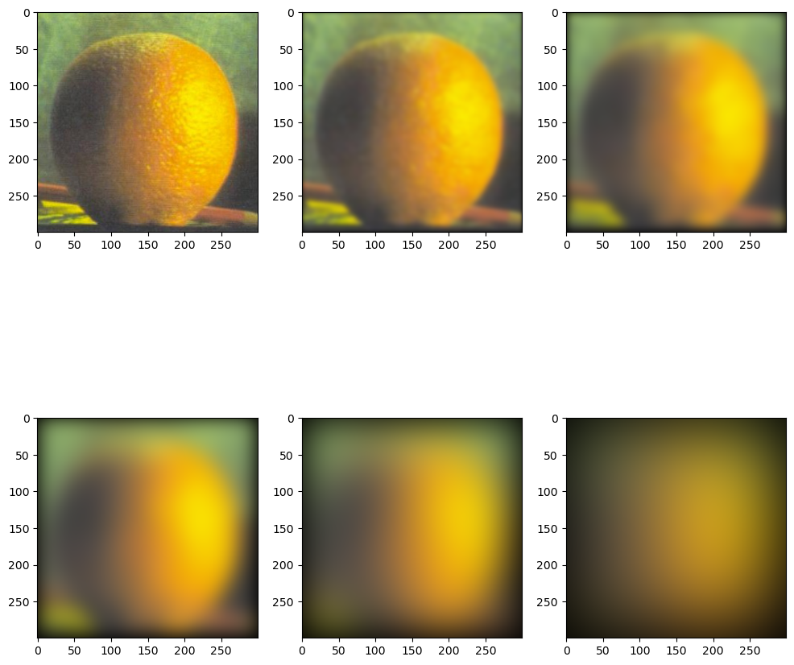
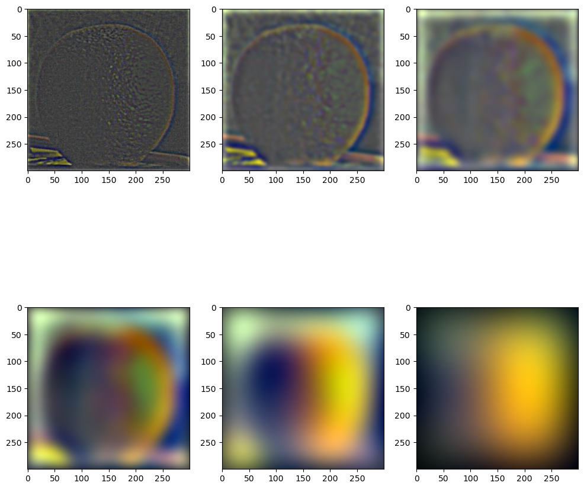
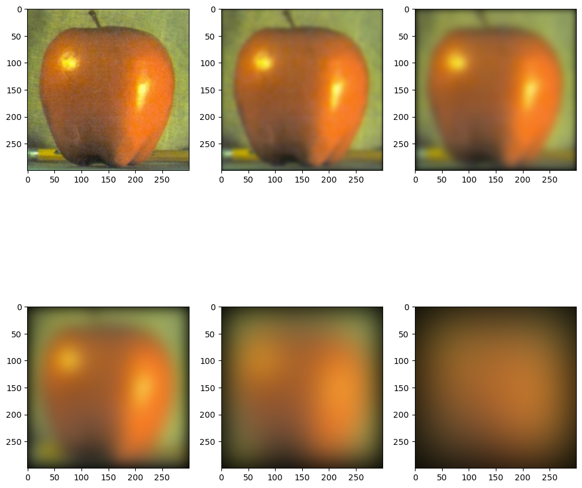
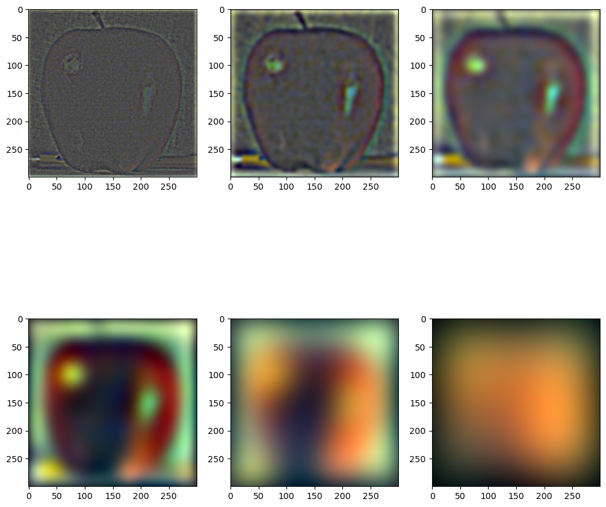
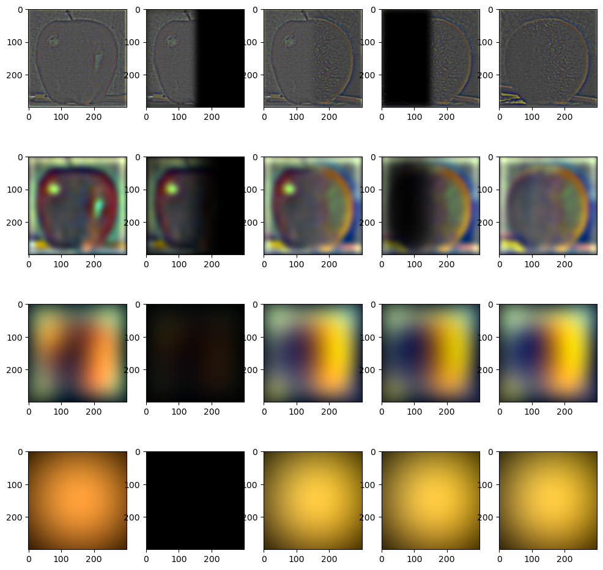

Gaussian and Laplacian Stacks
We implement Gaussian and Laplacian Stacks for the orange and the apple shown below with \( d = 6, \sigma = 3\) for the depth of the stack and standard deviation of the first Gaussian, respectively. Gaussian Stack of Orange

Laplacian Stack of Orange

Gaussian Stack of Apple

Laplacian Stack of Apple

Recreating the outcomes of Figure 3.42 in Szelski (Ed 2) page 167,
We use \( d = 7, \sigma = 4\) for the depth of the stack and standard deviation of the first Gaussian, respectively. The window size for the Gaussian kernel was once again taken to be \( k = 6[\sigma] + 1 \). Furthermore, for better results, we skip the first two masks in order to have smoother transition between the two images (i.e. we start choosing masks once they are smoothened enough by a Gaussian). By adding all the layers, the orapple is formed, but you can find that in the next section.
